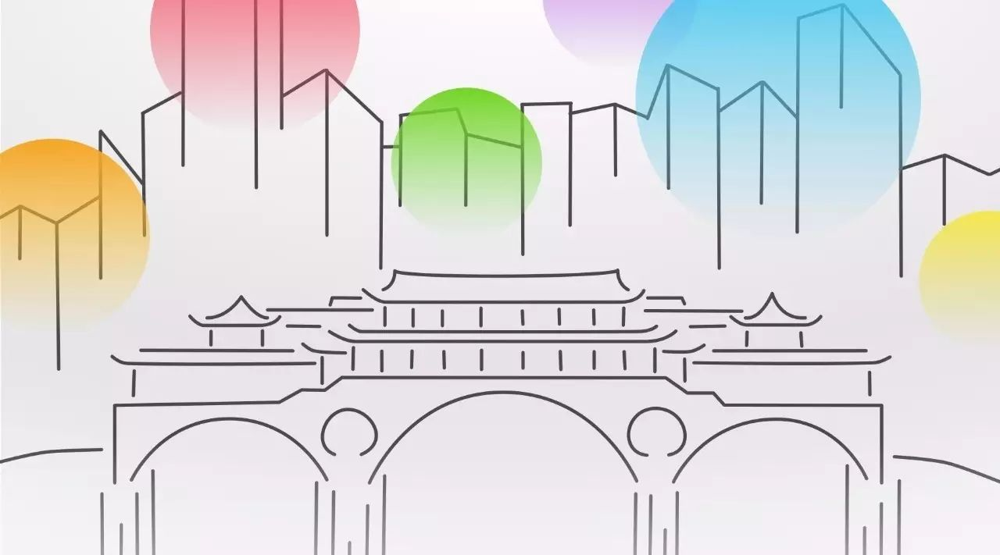
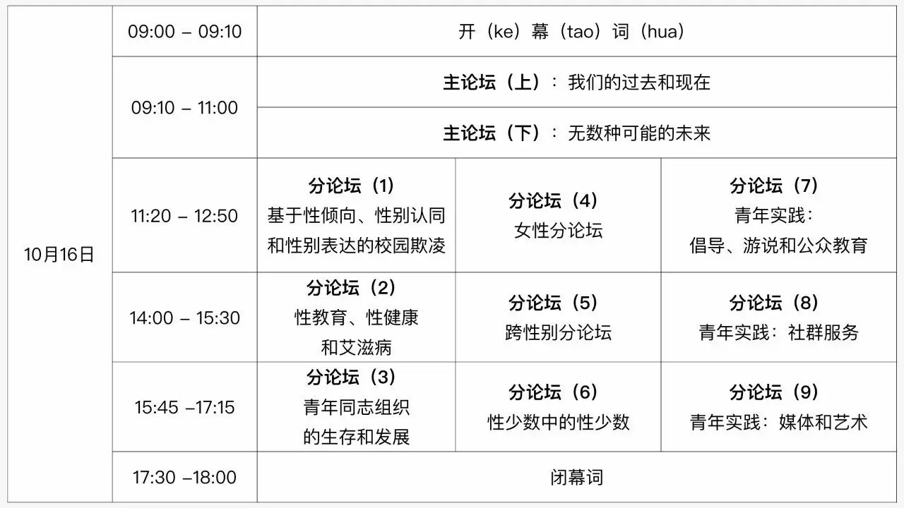
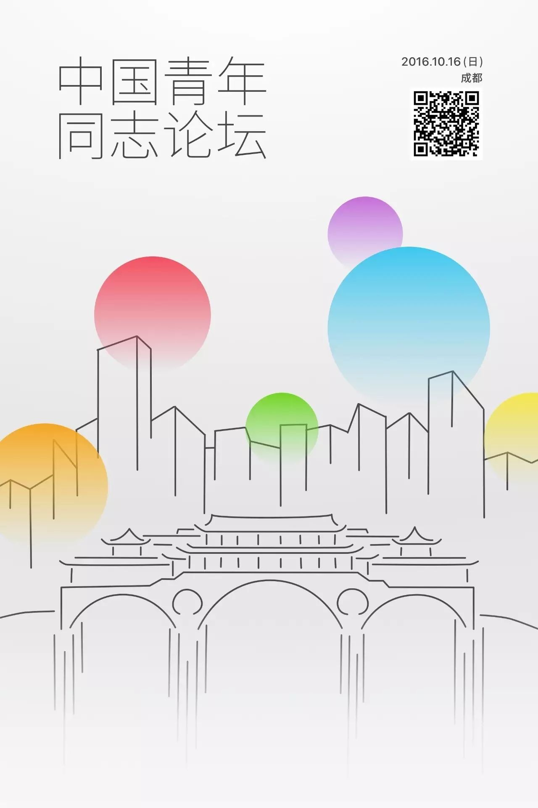
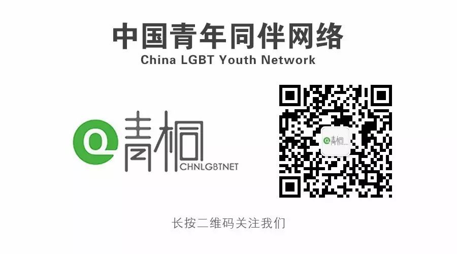

首届中国青年同志论坛，就等你来 | 10月16日@成都
史无前例的青年同志议题交流盛宴
30余位公益大咖带来精彩分享
多元议题供所有参与者共同探讨
艰难的过去让我们一起回顾
多彩的未来由我们共同创造
10月16日，首届中国青年同志论坛在成都起航

视觉设计：冉奥升


主论坛部分旨在对青年同志这一主题进行全景式梳理，以简练的笔触勾勒出性少数群体所面临的困境及应对方式。
70后，80后，90后，00后，男同志，女同志，跨性别……不同的身份，不同的故事，相似的道路。这一组的嘉宾们将结合各自的时代背景，讲述自己或同辈们所经历的与性倾向和性别身份有关的挑战及应对的方式。
于是：2005年成立成都LES爱心工作组并任负责人至今，2011年开始关注老年拉拉的生存环境，并发起老年拉拉口述史项目。
Evie：上海女爱成员，2013年加入上海骄傲节并参与《大陆拉拉地图》、《华人拉拉地图》以及2014－2016年上海骄傲戏剧节等项目。
豪杰：高中时开始关注艾滋公益，大学期间创办武汉同行同志中心，专注服务性少数及艾滋群体，毕业后选择了全职公益。
Hitomi：跨性别的一员，出生在东京，在北京长大的中日混血。从初二起逐渐完成出柜过程，已经获得父母、老师、同学的支持，并加入了男生体育队。
创办社会企业专注公民教育的资深记者，投身政策倡导和能力建设的NGO从业者，从事同志议题研究的高校学者，以及进入企业参与公益项目的大学生……他们将结合各自的实践，从不同视角分析如何消除歧视、推进共融。
蓝方：毕业于中国政法大学法学专业，巴黎政治大学国际事务学院。曾任《财经》杂志、财新传媒公共政策资深记者，常年关注公民社会与教育、劳工、社保等民生议题。C计划联合创始人。
蕾蕾：任职于国际知名NGO，负责能力建设和社区支持类项目，聚焦政策倡导和机构管理，为合作伙伴提供一对一深度辅导，开展线上和线下的工作坊等.
魏伟：华东师范大学社会发展学院副教授，主要研究性别和性，聚焦当代中国同志社群。著有《公开：当代成都同志空间的形成和变迁》。
Sachi：就职于上海她她公益部门，致力于LBTQ+社群服务及倡导工作。曾负责宁波LGBTQ+学生社团、“紫色纪念日”、“粉红一点”、全国友善空间地图等项目。

分论坛部分旨在围绕具体议题进行更加深入细致的讨论。考虑到同志群体及其所涉及议题的多元性，我们设计了3组平行论坛。
第一组分论坛聚焦于“权利”。有哪些本应享有的权利，因为青年和同志的身份，而无法实现？我们来聊一聊校园欺凌、性教育和艾滋病、同志组织生存状态这三个问题。
“校园欺凌”并不是一个耳熟能详的词汇？但也许每个人都曾是“欺凌”的受害者、参与者或旁观者，无论我们是“直”还是“弯”。通过欺凌亲历者的现场叙述、定量研究和影像资料，我们走近那些与性和性别相关的欺凌。
支元叹：QAF中文站志愿者。经历过许多基于性别刻板印象和取向的校园欺凌，因此走上了同志公益的道路，理想是成为一个「同运婊」。
伶伶：同志独立出版物《GS点杂志》采编记者。负责“校园欺凌讲述者”计划的文字采访、部分图片摄影、一部口述式影像。
小锐：中国青年同伴网络项目主管，主要负责各项社群活动的开展，协助组建全国高校LGBT小组网络。曾参与校园性别暴力的定量研究项目。
性教育的落实和性少数人群的权益有着怎样的关系？如何理解“健康权益”，如何保障其实现？同志人群与哪些健康议题更密切相关？如何做面向性少数人群的性教育？“老司机”们带你上路……
陆良：Havard Seed Fellow，玛丽斯特普国际组织中国代表处项目官员，目前负责职业技术学校性教育项目，及“你我伙伴”性教育支持平台的开发和运营管理。
吴么西：性教育研究及实务工作者，上海新金赛联合创始人，专门从事性教育咨询，致力于打造科学而不失趣味的性健康文化。
kiki：清华大学临床医学专业学生，曾在清华大学红十字会同伴教育部工作，2015年成立清华大学第一个LGBT小组——Purple。
成都同乐：成都专门为男同人群提供HIV咨询、检测、阳光关怀服务的公益组织。
在民间组织和公益行业蓬勃发展的今天，同志组织，尤其是青年同志组织的境况如何？校园中那些神秘的“彩虹社”又有着怎样的庐山真面目？天南海北的同志公益实践者们讲述不为人知的幕后故事。
Owen：浙大生物科学专业13级，酷儿论坛负责人。任内将酷儿论坛从男同性恋BBS交友平台转变为基于新媒体和线下的多元性别倡导与服务小组。
小妖：毕业于中华女子学院社会工作专业，现任北京同志中心项目主管，致力于培力LGBT青年，倡导多元性别教育，探索如何运用社会工作专业方法服务LGBT社群。
豪杰：高中时开始关注艾滋公益，大学期间创办武汉同行同志中心，专注服务性少数及艾滋群体，毕业后选择了全职公益。
马修：助理社会工作师，2013年成为同志 NGO全职社工。2014 年创办Speak Out，2016 年创办为 LGBT 人群提供友善心理咨询服务的 NGO 米尔克和他的朋友们。
第二组分论坛聚焦于“身份”。有哪些群体常常在同志议题的探讨中被代表，被消声？Ta们又面临着怎样特殊的困境？我们请来了女性酷儿、跨性别和更多“性少数中的性少数”。
酷儿理论和女性主义有着怎样的联系？女权主义理念如何通过法律政策、社群服务等方式来实现？男性可以是女权主义者么？今天我们聊聊女权主义，然而是不一样的视角。
Ausma：QHumanity和Diversity创始人之一。Diversity旨在为宁波LGBTQ+社群提供安全空间和增进社区交流；QHumanity则着力于中国与世界间的研究交流。
汉堡：性别平等小组成员，为遭遇性别就业歧视的女性提供援助，号召以法律维护女性权益，以行动改变不平等的就业现状。
HC：女权主义者，跨性别拉拉，广州跨性别中心创始人及负责人之一
赵成：生理男性，全职公益人，曾参与防艾、同志公益、性工作者权益等工作。在参与独白系列话剧的创作和演出以后，成为了一名女权主义酷儿。
论坛5: 跨性别分论坛
这一场，我们希望呈现一直以来被忽视的跨性别群体的多元性。既是身份的多元，也是问题的多元。
Hitomi：从小就不认为自己是女性，也经历了一系列自我认知和确认的成长过程：六年级时在网上了解到了跨性别，并且意识到自己是跨性别的一员。
HC：跨性别拉拉，认为性别（包括生理性别）不是自然存在而是文化构建，自己的跨性别女性的身份是因为自己想要成为的外在在社会文化中一般被指定为女性。
李思霖：“霖斋”跨性别避难所和咨询项目的发起人，为遭遇家庭暴力、家庭威胁、社会就业歧视的跨性别者提供短期的免费居住服务。同时也在进行对于跨性别者的咨询和危机干预的线上以及线下的咨询。
超小米：京城个体户，《奇葩来了》参赛选手。曾在电视节目中坦然讲诉自己作为流性人在日常生活中所经历过的不公平待遇，受到广泛关注。
论坛6: 性少数中的性少数
双性恋，无性恋，开放关系，BDSM……他们是少数中的少数，各自背负着不同的误解和污名。
恒远：武汉大学学生。于2015年创立武汉大学同志公益小组（现更名为武汉大学性别性向平等研究会）。对绳缚艺术尤为痴迷。捆绑作品在国内绳缚圈广受好评。
小新：无性恋，QAF中文站志愿者。一个来自四线城市的普通大学生，拥有着比同性恋更加边缘的性倾向。
布达：泛性恋，曾任西南财经大学LGBT小组“西财彩虹同伴”负责人。2013年联合创立r&B双性恋团体，致力于为双性恋者构建知识普及、增强认同和消除歧视的支持网络。
Sachi/Ausma : 一个是开放关系的实践者，一个是多元关系的典型案例。傻傻分不清楚？来现场解惑吧。
第三组分论坛聚焦于“实践”。五湖四海的青年行动家们，从倡导游说和公众教育、社群服务、媒体和艺术三个角度来分享各自的实践。
“倡导”的要义，是从大环境入手改善同志人群的境遇。小到校园环境，大到婚姻政策和舆论方向，青年倡导者们如何和政府、媒体、学校打交道？来学习一些实用的倡导工具吧。
小罗：华中科技大学大三本科生，华科同志骄傲公益小组（HGP）负责人。有非常丰富的教师游说经验，已经与校方建立良好合作，并成功申请校级科研项目，开展华科性少数群体整体状况及工作机制调研。
孙文麟：“中国同性婚姻维权第一案”的新闻当事人，同志组织“ 婚姻自由”创始人，致力于推动中国承认同性婚姻合法。
阮唐：入门级社会科学工作者，在读博士，西安交通大学Flagship负责人，组织致力于推动西安交通大学及周边高校平等、多元的性别文化。
紫薯：性/别权利工作者，自12年起参与相关公益活动，现任北京纪安德研究员，BCome小组成员。在倡导者如何与媒体沟通方面有一些经验和心得。
与倡导不同，社群服务旨在改善社群中个体的生存现状。倾听服务、心理咨询、艾滋检测、同志论坛……其实每个人都可以通过自己的专长，为有需要的人伸出援助之手。
默君：北京大学多元性别研究小组神秘柜子（Colorsworld）统筹，兼任青桐行政主管。神秘柜子为性少数学生提供的线上倾听服务拥有不俗的口碑。
小罗：华科同志骄傲公益小组（HGP）负责人。HGP小组成功申请了中国高校防艾基金艾伯维项目，与校医院、疾控合作开展同伴快检服务。
Owen：浙大生物科学专业13级，酷儿论坛负责人。任内将酷儿论坛从男同性恋BBS交友平台转变为基于新媒体和线下的多元性别倡导与服务小组。
慧慧：西南民族大学社会工作系，Speak Out 核心团队成员，“米尔克和他的朋友们” 联合创办人，首席运营官，心理咨询项目负责人。
除了倡导和服务，另有不拘一格的“艺术家”们，以独特的方式践行着公益。办杂志？做字幕？甚至绘画、声乐也可以是同志公益的一种？
支元叹：QAF中文站志愿者，负责自媒体运营工作，对媒体和艺术作品中的同志形象再现也有一定的观察和思考。
伶伶：曾制作电子杂志《益智泥》，拍摄纪录片《孟家诲银》，参与“西部同志肖像”计划并完成一部纪录片。最近一部纪录片是与一元公社合作的《野草，野草》。
少华：西安美术学院版画系大四学生。2015年在陕西省书画大赛中获得一等奖。关注艺术中的性别议题。现任西安美院橄榄树公益小组副社长。
噪音：成都无同合唱团（Wu Tong Man's Chorus In Cheng Du）创建者，并担任合唱团编曲、指挥工作。期望通过合唱的艺术形式与更多人交流沟通，并分享歌唱的快乐。

扫描下方二维码或点击阅读原文
可注册参与本次论坛
更多主论坛及分论坛细节，请留意和关注中国青年同伴的微信公众平台（微信号：Chinalgbtyouth）及米尔克和他的朋友们（微信号：MilksFriends）的微信公众平台。
这一次，历史由你来书写。

你可能会关心的问题
Q：论坛收费的来由是什么，为什么会收取费用？
A：之所以会收取费用，是为了承担所有从全国各地往来的嘉宾的部分交通费用，以及他/她们在成都的住宿，即便如此，在本着节约办会的原则下，我们所收取的费用，也不能全部覆盖所有的预算。
Q：论坛将在哪里举办？
A：由于本次青年同志论坛采取注册制，所以我们举办论坛的地点，仅会告知已经成功注册的观众。
Q：怎么验票？我怎么查看我所购买的门票？
A：就算你没有截图保留你的票据也没有关系，现场只需要向我们的工作人员报手机号的后四位，就可以验票了，所有成功注册的观众都会被系统记录在案，请放心，我们不会泄露你的隐私及电话号码。
其余遗留所有问题及未尽事宜，你可以拨打我们的客服电话028 - 86945928（10:30 - 18:30），国家法定节假日及周一除外。

中国青年同志论坛是一场青年同志自发组织，特别聚焦于青年性少数群体议题的大型活动，由两场主论坛和九场分论坛组成。
中国青年同伴网络
中国青年同伴网络（China LGBT Youth Network），又称青桐，是由全国各高校性少数青年团体共同组成的社群组织。

米尔克和他的朋友们
“米尔克和他的朋友们” （MilksFriends）是一家关注同志公民自由表达、推动多元文化发展的非营利组织。我们致力于透过心理咨询、自助助人和公共教育等手法，以增强 LGBTI 及相关人群的自我认同，实现一个中国公民能看见差异、多元共融、平等生活的社会环境。

点击下方「阅读原文」注册参会